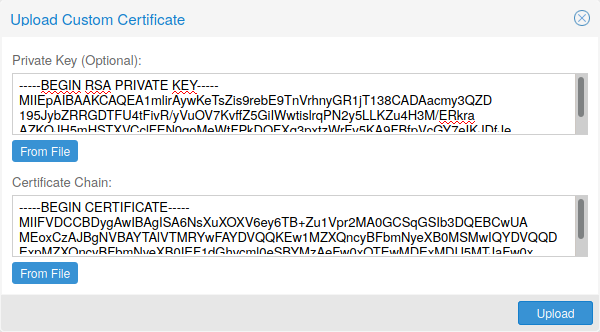
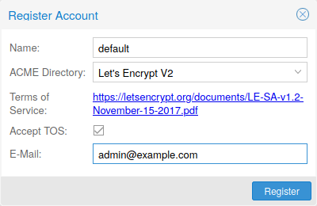
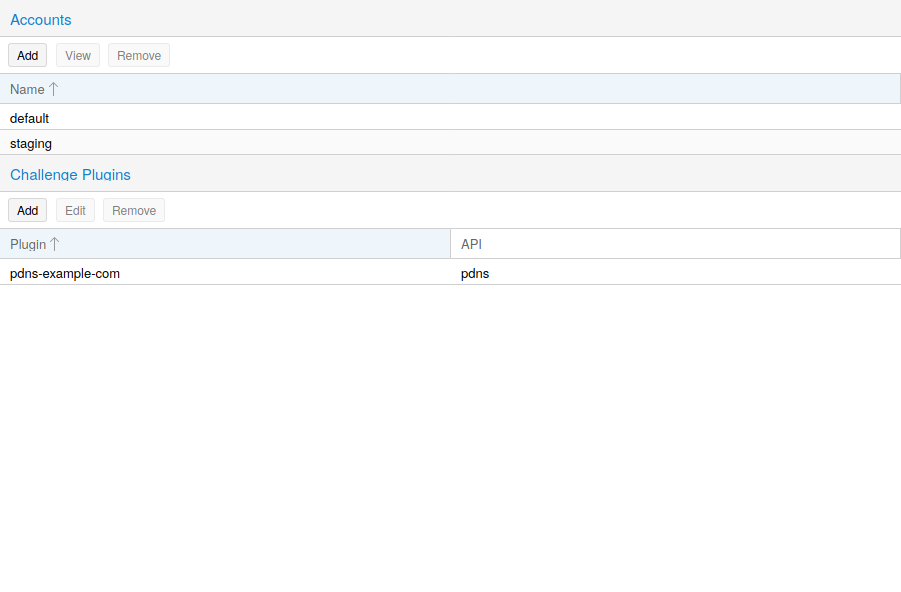
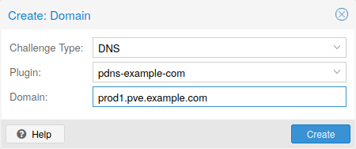
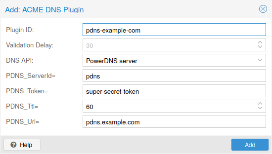

Each Proxmox VE cluster creates by default its own (self-signed) Certificate
Authority (CA) and generates a certificate for each node which gets signed by
the aforementioned CA. These certificates are used for encrypted communication
with the cluster’s pveproxy service and the Shell/Console feature if SPICE is
used.
The CA certificate and key are stored in the Proxmox Cluster File System (pmxcfs).
The REST API and web GUI are provided by the pveproxy service, which runs on
each node.
You have the following options for the certificate used by pveproxy:
/etc/pve/nodes/NODENAME/pve-ssl.pem is used. This certificate is signed by
the cluster CA and therefore not automatically trusted by browsers and
operating systems.
For options 2 and 3 the file /etc/pve/local/pveproxy-ssl.pem (and
/etc/pve/local/pveproxy-ssl.key, which needs to be without password) is used.
Keep in mind that /etc/pve/local is a node specific symlink to
/etc/pve/nodes/NODENAME.
Certificates are managed with the Proxmox VE Node management command
(see the pvenode(1) manpage).
Do not replace or manually modify the automatically generated node
certificate files in /etc/pve/local/pve-ssl.pem and
/etc/pve/local/pve-ssl.key or the cluster CA files in
/etc/pve/pve-root-ca.pem and /etc/pve/priv/pve-root-ca.key.
If you already have a certificate which you want to use for a Proxmox VE node you can upload that certificate simply over the web interface.

Note that the certificates key file, if provided, mustn’t be password protected.
Proxmox VE includes an implementation of the Automatic Certificate Management Environment ACME protocol, allowing Proxmox VE admins to use an ACME provider like Let’s Encrypt for easy setup of TLS certificates which are accepted and trusted on modern operating systems and web browsers out of the box.
Currently, the two ACME endpoints implemented are the
Let’s Encrypt (LE) production and its staging
environment. Our ACME client supports validation of http-01 challenges using
a built-in web server and validation of dns-01 challenges using a DNS plugin
supporting all the DNS API endpoints acme.sh does.

You need to register an ACME account per cluster with the endpoint you want to use. The email address used for that account will serve as contact point for renewal-due or similar notifications from the ACME endpoint.
You can register and deactivate ACME accounts over the web interface
Datacenter -> ACME or using the pvenode command-line tool.
pvenode acme account register account-name mail@example.com
Because of rate-limits you
should use LE staging for experiments or if you use ACME for the first time.
The ACME plugins task is to provide automatic verification that you, and thus the Proxmox VE cluster under your operation, are the real owner of a domain. This is the basis building block for automatic certificate management.
The ACME protocol specifies different types of challenges, for example the
http-01 where a web server provides a file with a certain content to prove
that it controls a domain. Sometimes this isn’t possible, either because of
technical limitations or if the address of a record to is not reachable from
the public internet. The dns-01 challenge can be used in these cases. This
challenge is fulfilled by creating a certain DNS record in the domain’s zone.

Proxmox VE supports both of those challenge types out of the box, you can configure
plugins either over the web interface under Datacenter -> ACME, or using the
pvenode acme plugin add command.
ACME Plugin configurations are stored in /etc/pve/priv/acme/plugins.cfg.
A plugin is available for all nodes in the cluster.
Each domain is node specific. You can add new or manage existing domain entries
under Node -> Certificates, or using the pvenode config command.

After configuring the desired domain(s) for a node and ensuring that the desired ACME account is selected, you can order your new certificate over the web interface. On success the interface will reload after 10 seconds.
Renewal will happen automatically.
There is always an implicitly configured standalone plugin for validating
http-01 challenges via the built-in webserver spawned on port 80.
The name standalone means that it can provide the validation on it’s
own, without any third party service. So, this plugin works also for cluster
nodes.
There are a few prerequisites to use it for certificate management with Let’s Encrypts ACME.
On systems where external access for validation via the http-01 method is
not possible or desired, it is possible to use the dns-01 validation method.
This validation method requires a DNS server that allows provisioning of TXT
records via an API.
Proxmox VE re-uses the DNS plugins developed for the acme.sh
[7] project, please
refer to its documentation for details on configuration of specific APIs.
The easiest way to configure a new plugin with the DNS API is using the web
interface (Datacenter -> ACME).

Choose DNS as challenge type. Then you can select your API provider, enter
the credential data to access your account over their API.
The validation delay determines the time in seconds between setting the DNS
record and prompting the ACME provider to validate it, as providers often need
some time to propagate the record in their infrastructure.
See the acme.sh How to use DNS API wiki for more detailed information about getting API credentials for your provider.
As there are many DNS providers and API endpoints Proxmox VE automatically generates
the form for the credentials for some providers. For the others you will see a
bigger text area, simply copy all the credentials KEY=VALUE pairs in there.
A special alias mode can be used to handle the validation on a different
domain/DNS server, in case your primary/real DNS does not support provisioning
via an API. Manually set up a permanent CNAME record for
_acme-challenge.domain1.example pointing to _acme-challenge.domain2.example
and set the alias property on the corresponding acmedomainX key in the
Proxmox VE node configuration file to domain2.example to allow the DNS server of
domain2.example to validate all challenges for domain1.example.
Combining http-01 and dns-01 validation is possible in case your node is
reachable via multiple domains with different requirements / DNS provisioning
capabilities. Mixing DNS APIs from multiple providers or instances is also
possible by specifying different plugin instances per domain.
Accessing the same service over multiple domains increases complexity and should be avoided if possible.
If a node has been successfully configured with an ACME-provided certificate
(either via pvenode or via the GUI), the certificate will be automatically
renewed by the pve-daily-update.service. Currently, renewal will be attempted
if the certificate has expired already, or will expire in the next 30 days.
If you are using a custom directory that issues short-lived certificates,
disabling the random delay for the pve-daily-update.timer unit might be
advisable to avoid missing a certificate renewal after a reboot.
root@proxmox:~# pvenode acme account register default mail@example.invalid Directory endpoints: 0) Let's Encrypt V2 (https://acme-v02.api.letsencrypt.org/directory) 1) Let's Encrypt V2 Staging (https://acme-staging-v02.api.letsencrypt.org/directory) 2) Custom Enter selection: 1 Terms of Service: https://letsencrypt.org/documents/LE-SA-v1.2-November-15-2017.pdf Do you agree to the above terms? [y|N]y ... Task OK root@proxmox:~# pvenode config set --acme domains=example.invalid root@proxmox:~# pvenode acme cert order Loading ACME account details Placing ACME order ... Status is 'valid'! All domains validated! ... Downloading certificate Setting pveproxy certificate and key Restarting pveproxy Task OK
the account registration steps are the same no matter which plugins are used, and are not repeated here.
OVH_AK and OVH_AS need to be obtained from OVH according to the OVH
API documentation
First you need to get all information so you and Proxmox VE can access the API.
root@proxmox:~# cat /path/to/api-token
OVH_AK=XXXXXXXXXXXXXXXX
OVH_AS=YYYYYYYYYYYYYYYYYYYYYYYYYYYYYYYY
root@proxmox:~# source /path/to/api-token
root@proxmox:~# curl -XPOST -H"X-Ovh-Application: $OVH_AK" -H "Content-type: application/json" \
https://eu.api.ovh.com/1.0/auth/credential -d '{
"accessRules": [
{"method": "GET","path": "/auth/time"},
{"method": "GET","path": "/domain"},
{"method": "GET","path": "/domain/zone/*"},
{"method": "GET","path": "/domain/zone/*/record"},
{"method": "POST","path": "/domain/zone/*/record"},
{"method": "POST","path": "/domain/zone/*/refresh"},
{"method": "PUT","path": "/domain/zone/*/record/"},
{"method": "DELETE","path": "/domain/zone/*/record/*"}
]
}'
{"consumerKey":"ZZZZZZZZZZZZZZZZZZZZZZZZZZZZZZZZ","state":"pendingValidation","validationUrl":"https://eu.api.ovh.com/auth/?credentialToken=AAAAAAAAAAAAAAAAAAAAAAAAAAAAAAAAAAAAAAAAAAAAAAAAAAAAAAAAAAAAAAAA"}
(open validation URL and follow instructions to link Application Key with account/Consumer Key)
root@proxmox:~# echo "OVH_CK=ZZZZZZZZZZZZZZZZZZZZZZZZZZZZZZZZ" >> /path/to/api-tokenNow you can setup the the ACME plugin:
root@proxmox:~# pvenode acme plugin add dns example_plugin --api ovh --data /path/to/api_token root@proxmox:~# pvenode acme plugin config example_plugin ┌────────┬──────────────────────────────────────────┐ │ key │ value │ ╞════════╪══════════════════════════════════════════╡ │ api │ ovh │ ├────────┼──────────────────────────────────────────┤ │ data │ OVH_AK=XXXXXXXXXXXXXXXX │ │ │ OVH_AS=YYYYYYYYYYYYYYYYYYYYYYYYYYYYYYYY │ │ │ OVH_CK=ZZZZZZZZZZZZZZZZZZZZZZZZZZZZZZZZ │ ├────────┼──────────────────────────────────────────┤ │ digest │ 867fcf556363ca1bea866863093fcab83edf47a1 │ ├────────┼──────────────────────────────────────────┤ │ plugin │ example_plugin │ ├────────┼──────────────────────────────────────────┤ │ type │ dns │ └────────┴──────────────────────────────────────────┘
At last you can configure the domain you want to get certificates for and place the certificate order for it:
root@proxmox:~# pvenode config set -acmedomain0 example.proxmox.com,plugin=example_plugin root@proxmox:~# pvenode acme cert order Loading ACME account details Placing ACME order Order URL: https://acme-staging-v02.api.letsencrypt.org/acme/order/11111111/22222222 Getting authorization details from 'https://acme-staging-v02.api.letsencrypt.org/acme/authz-v3/33333333' The validation for example.proxmox.com is pending! [Wed Apr 22 09:25:30 CEST 2020] Using OVH endpoint: ovh-eu [Wed Apr 22 09:25:30 CEST 2020] Checking authentication [Wed Apr 22 09:25:30 CEST 2020] Consumer key is ok. [Wed Apr 22 09:25:31 CEST 2020] Adding record [Wed Apr 22 09:25:32 CEST 2020] Added, sleep 10 seconds. Add TXT record: _acme-challenge.example.proxmox.com Triggering validation Sleeping for 5 seconds Status is 'valid'! [Wed Apr 22 09:25:48 CEST 2020] Using OVH endpoint: ovh-eu [Wed Apr 22 09:25:48 CEST 2020] Checking authentication [Wed Apr 22 09:25:48 CEST 2020] Consumer key is ok. Remove TXT record: _acme-challenge.example.proxmox.com All domains validated! Creating CSR Checking order status Order is ready, finalizing order valid! Downloading certificate Setting pveproxy certificate and key Restarting pveproxy Task OK
Changing the ACME directory for an account is unsupported, but as Proxmox VE supports more than one account you can just create a new one with the production (trusted) ACME directory as endpoint. You can also deactivate the staging account and recreate it.
Example: Changing the default ACME account from staging to directory using pvenode.
root@proxmox:~# pvenode acme account deactivate default Renaming account file from '/etc/pve/priv/acme/default' to '/etc/pve/priv/acme/_deactivated_default_4' Task OK root@proxmox:~# pvenode acme account register default example@proxmox.com Directory endpoints: 0) Let's Encrypt V2 (https://acme-v02.api.letsencrypt.org/directory) 1) Let's Encrypt V2 Staging (https://acme-staging-v02.api.letsencrypt.org/directory) 2) Custom Enter selection: 0 Terms of Service: https://letsencrypt.org/documents/LE-SA-v1.2-November-15-2017.pdf Do you agree to the above terms? [y|N]y ... Task OK